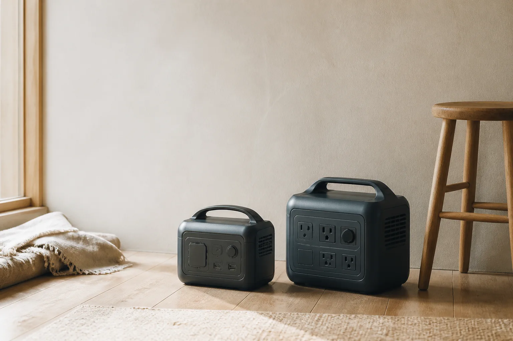

備え／比較ガイド
ポータブル電源を、容量より先に暮らしから選ぶ。
停電への備えと、週末の持ち出し。必要な容量も、許容できる重さも同じではありません。

- 対象読者
- エースの機内持ち込み候補を、軽さ・開き方・容量で絞りたい人
- 執筆
- 暮らしのしるべ編集部
- 商品情報確認
- 編集部ファクトチェック
- 最終確認日
- 2026.08.26
- 実機試験
- なし
比較範囲：エース系3モデル。市場全体ではなく、型番と一次情報を照合できた3モデルです。
市場全体のランキングではなく、型番と一次情報を照合できた3モデルの条件別比較です。 選ぶ場面から、軽さ・開き方・非拡張容量の違いを整理します。
30秒でわかる結論
比較表
情報確認日：2026-08-26。価格・在庫・カラーは比較順位に使っていません。
| 商品 | 容量 | 重量 | 向く人 | 注意点 | 確認日 |
|---|---|---|---|---|---|
| クレスタ 06316 | 34L A：公式仕様 | 3.2kg A：公式仕様 | 軽さ優先 D：編集部の判断 | 拡張時D29cm | 2026-08-26 |
| ディフェレンス 05721 | 32L A：公式仕様 | 3.5kg A：公式仕様 | アクセス優先 D：編集部の判断 | 拡張時118cm | 2026-08-26 |
| マックスパス4 01471 | 40L A：公式仕様 | 3.6kg A：公式仕様 | 容量優先 D：編集部の判断 | 3モデル中最重量 | 未確認 UNKNOWN：未確認 |
- 商品
- クレスタ 06316
- 容量
- 34L
- 重量
- 3.2kg
- 向く人
- 軽さを優先する人
- 注意点
- 拡張時D29cm
- 確認日
- 2026-08-26
- 商品
- ディフェレンス 05721
- 容量
- 32L
- 重量
- 3.5kg
- 向く人
- 移動中にアクセスしたい人
- 注意点
- 拡張時118cm
- 確認日
- 2026-08-26
- 商品
- マックスパス4 01471
- 容量
- 40L
- 重量
- 3.6kg
- 向く人
- 容量と前面収納を優先する人
- 注意点
- 3モデル中最重量
- 確認日
- 未確認
商品ごとの違い
検証済み画像なし
階段・収納棚
クレスタ 06316
持ち上げる場面で、本体重量を3.2kgに抑えられます。
おすすめする理由：3モデルで最も軽いという一次情報を、軽さ優先の条件に結び付けました。
- 34L A：公式仕様
- 3.2kg A：公式仕様
- 拡張時D29cm A：公式仕様
向いている人
- 階段や収納棚で持ち上げる負担を抑えたい人
- 非拡張容量40Lを優先する人
注意点：拡張すると奥行きが29cmになります。
情報確認日 2026-08-26・公式サイトで仕様を確認する・この商品の注意点を先に読む
価格・在庫・カラーは販売ページでその都度確認する項目です。
楽天CTAなし（検証済み直リンク未投入）検証済み画像なし
狭い場所・移動中
ディフェレンス 05721
2WAY開閉とキャスターストッパーで、狭い場所の出し入れを考えやすいモデルです。
おすすめする理由：開き方とストッパーを優先する条件に合います。
- 32L
- 3.5kg
- 2WAY・ストッパー
向いている人
- 移動中に荷物へアクセスしたい人
- 本体の最軽量を優先する人
注意点：拡張時の3辺合計は118cmです。
情報確認日 2026-08-26・公式サイトで仕様を確認する・この商品の注意点を先に読む
楽天CTAなし（検証済み直リンク未投入）検証済み画像なし
容量・前面収納
マックスパス4 01471 — 長い商品名が連続してもカード幅からはみ出さないfixture
100席以上向けの寸法内で、40Lと前面収納を優先できます。
おすすめする理由：非拡張容量を優先する条件に合います。
- 40L
- 3.6kg
- 確認不能値：UNKNOWN：未確認
向いている人
- 容量と前面収納を優先する人
- 3モデル中の軽さを優先する人
注意点：3モデル中最重量です。在庫なしのfixtureでCTAを表示しません。
情報確認日 2026-08-26・公式サイトで仕様を確認する・この商品の注意点を先に読む
在庫なしfixture・CTAなし